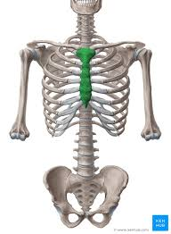
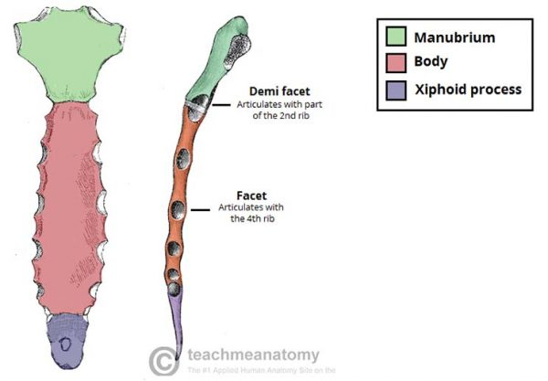
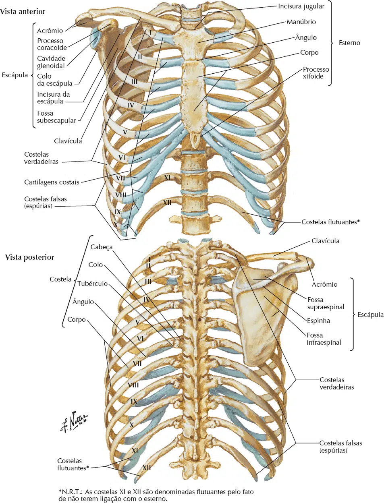
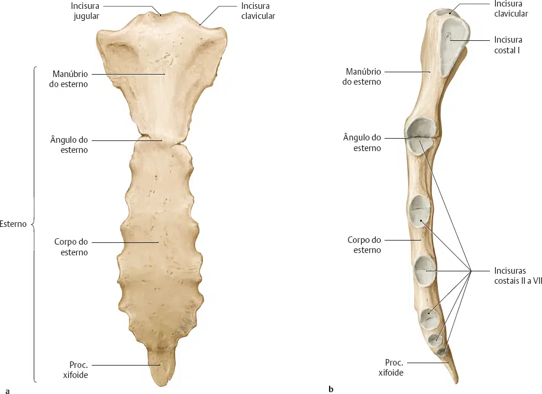

O esterno é um osso plano localizado na face anterior do tórax.
Encontra-se na linha média do peito e tem uma forma “T”, com sua morfologia parecida com uma “gravata”.
Como parte da parede óssea torácica, o esterno ajuda a proteger as vísceras torácicas internas – como o coração, os pulmões e o esôfago.
Suas funções são proteger os órgãos torácicos de trauma e também formam o anexo ósseo para vários músculos.
É também o centro em torno do qual as 10 costelas superiores ligam direta ou indiretamente.

O esterno encontra-se superficialmente na parede anterior do tórax e é facilmente palpável abaixo da pele na linha média.
O osso cobre e protege o coração e os grandes vasos em parte, bem como a traqueia e o esôfago.
A palavra esterno origina-se do grego “Sternon“, que significa peito.
É um osso plano que se articula com a clavícula e as cartilagens costais das 7 costelas superiores (costelas verdadeiras), enquanto a 8ª, 9ª e 10ª costelas (costelas falsas) são indiretamente ligadas ao esterno através da cartilagem costal das costelas acima.
O osso é dividido em três partes:
O manubrio.
O corpo do esterno (mesosterno).
O processo xifóide (xiphisternum).


O manúbrio é um grande osso de forma quadrangular que se encontra acima do corpo do esterno.
A borda inferior é mais estreita, é bastante áspera e articula-se com o corpo com uma camada fina de cartilagem no meio.
Na borda superior do osso está a incisura jugular, fibras de ligamentos interclaviculares são anexadas aqui.
As incisuras claviculares para a articulação das clavículas são projetados para cima e lateralmente em ambos os lados do entalhe jugular.
As cartilagens costais da primeira costela e parte da segunda costela também se articulam com o manúbrio e se encaixam nas incisuras da borda lateral.
Nas bordas laterais do manúbrio, há uma incisura, para articulação com a cartilagem costal da 1ª costela e uma incisura para articulação com parte da cartilagem costal da 2ªcostela.
Inferiormente, o manúbrio articula-se com o corpo do esterno, formando o ângulo esternal ou ângulo de Louis.
Isso pode ser sentido como uma crista transversal do osso na face anterior do esterno.
O ângulo esternal é comumente usado como uma ajuda para contar as costelas, pois marca o nível da 2ª cartilagem costal.
O corpo é plano e alongado, é a maior parte do esterno.
Articula-se com o manúbrio superiormente (articulação manúbrio-esternal) e o processo xifóide inferiormente (articulação xifoesternal).
As bordas laterais do corpo são marcadas por numerosas incisuras.
Essas incisuras articulam-se com as cartilagens costais das 3ª à 6ª costelas.
O processo xifóide é uma pequena projeção óssea que geralmente é pontiaguda.
Possui hemifacetas para parte da 7ª cartilagem costal em seu ângulo superolateral.
As fibras do músculo reto abdominal e aponeurose dos oblíquos internos e externos estão ligadas à sua superfície anterior.
A superfície posterior dá origem ao ligamento esternopericárdico inferior.
É também o local de inserção de parte do diafragma torácico.
O suprimento de sangue para o esterno surge da artéria torácica interna.
